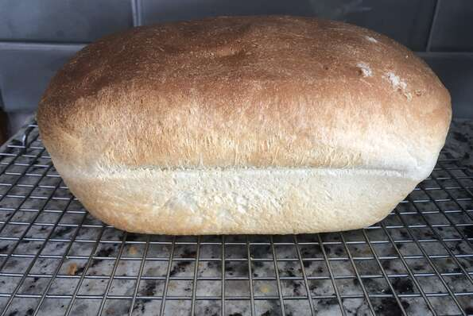

Bread

Description
uhhh uhmm idk lol it's fucking bread
Ingredients
1 cup warm water (110 degrees F/45 degrees C)
3 tablespoons white sugar
1 ½ teaspoons salt
3 tablespoons vegetable oil
3 cups bread flour
2 ¼ teaspoons active dry yeast
Steps
- Place water, sugar, salt, oil, bread flour and yeast into pan of bread machine.
- Bake on White Bread setting. Cool on wire racks before slicing.